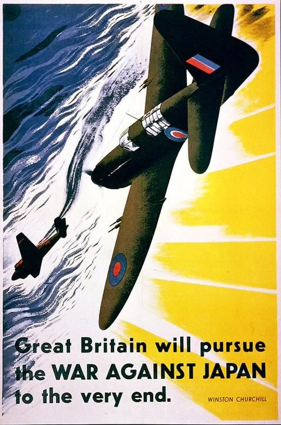
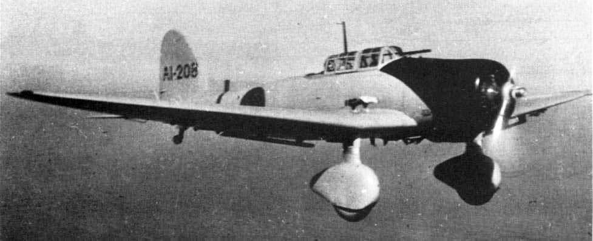
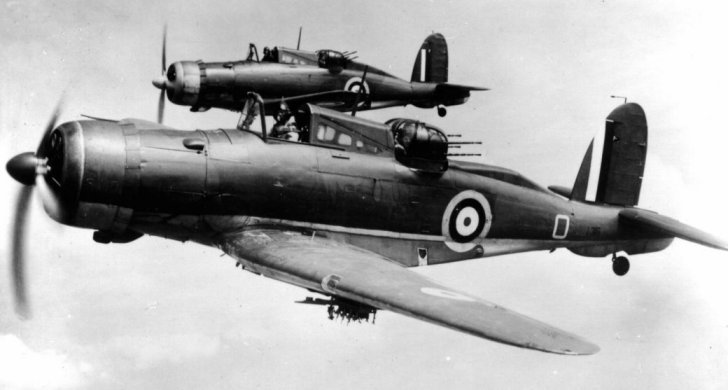
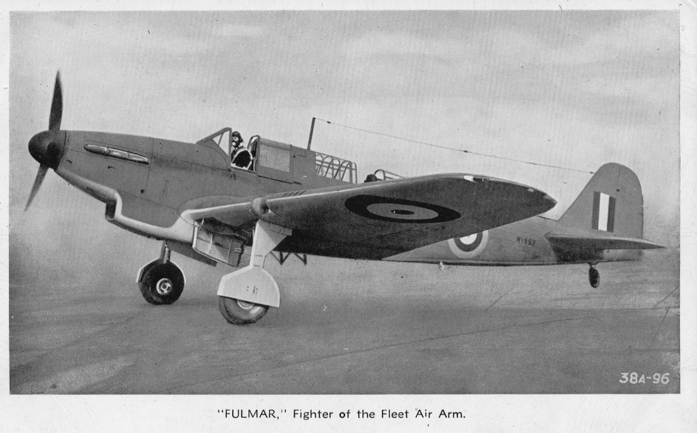
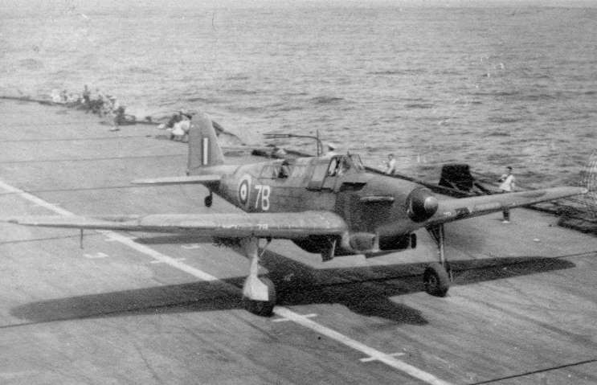
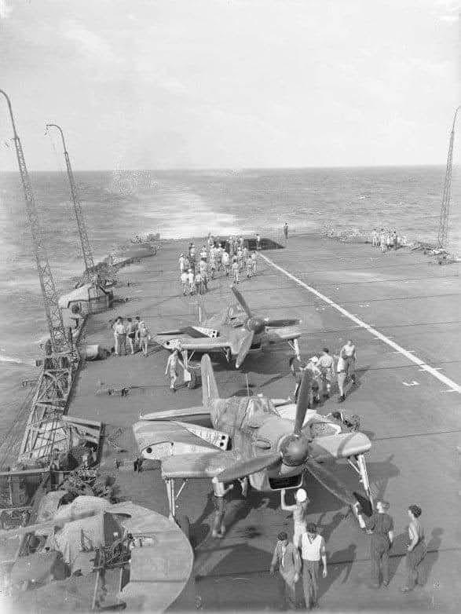
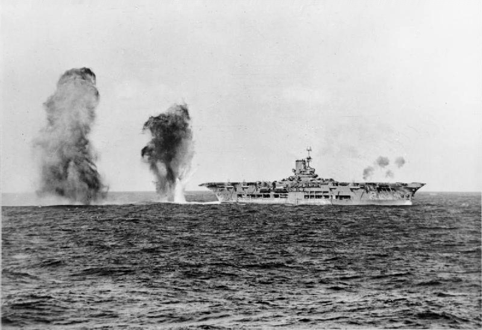

WW2에서의 스텔스(?) 전투기 Fulmar 이야기
게시: 2021-05-27T06:30:17+09:00
제2차세계대전에 일본이 참여한 직후 만들어진 영국의 홍보 포스터에는 영국군 전투기가 일본군 항공기를 격추하는 모습이 그려져 있습니다. 그런데 여기에 영국군을 대표하여 등장하는 전투기의 모습은 영국이 자랑하는 스핏파이어(Spitfire)가 아니고, 좀더 투박하고 긴 2인승 항공기입니다. 폭격기도 아니고 전투기가 2인승이라니, 대체 이 전투기의 정체는 무엇일까요?

이 전투기는 1940년에 도입된 Fairey Fulmar라고 하는 전투기입니다. 전투기 치고는 독특하게도 2인승 맞고, 1938년에 도입된 스핏파이어 전투기보다도 더 신형 전투기입니다. 그리고 스핏파이어와 동일한 롤스로이스 멀린(Rolls Royce Merlin) 엔진을 장착했습니다. 그러나 성능은 매우 실망스러웠습니다. 일단 속도가 느려서 독일 하인켈 폭격기(He-111)보다 48km/h가 느렸습니다. 전투기라면 적 폭격기를 따라잡아서 쏘아 떨어뜨릴 수 있어야 하는데, 그 점에서 임무 수행이 불가능할 정도였습니다. 그렇다고 선회력이 좋으냐하면 그것도 아니었습니다. 저 포스터 그림과는 달리, 나중에 태평양 전선에 배치되었을 때, 풀머 전투기들이 폭탄을 떨어뜨리고 돌아가는 일본군 발 폭격기(Val, 아이치 D3A1)를 습격한 일이 있었는데, 오히려 습격당한 발 폭격기들이 더 우수한 선회력을 보여주며 풀머 전투기 2대를 격추시켜버리기도 했습니다.

(1935년에 도입된 하이켈 폭격기 HE-111입니다. 최고 속력 440km/h입니다.)

(풀머에게 굴욕을 안겨준 일본 해군 함상 폭격기 'Val'입니다. 최고 속력은 약 400km/h입니다.) 전투기의 명작 스핏파이어를 만든 영국이 이렇게 허접한 전투기를 만든 이유는 당시 영국 해군성(Admiralty)이 해군 항공대에 대해 매우 무지한 상태였기 때문이었습니다. 그나마 풀머는 상대적으로 좋은 전투기에 속했고, 영국 해군성은 애초에 개념부터 잘못된 포탑형 함재 전투기 록(Blackburn Roc) 같은 것을 만들기도 했습니다. 덕분에 영국 해군 항공대(Fleet Air Arm)는 전쟁 내내 적절한 함재 전투기를 갖지 못했고 나중에 미군이 공여해준 와일드캣이나 콜세어 등의 미제 전투기에 많이 의존해야 했습니다.

(영국 해군성이 좋은 개념이라며 후원한 포탑형 전투기 록(Blackburn Roc)입니다. 아라비안 나이트에 나오는 전설의 새 '록'에서 이름을 따왔답니다. 별 쓸모도 없는 후방 포탑 덕분에 당연히 엄청나게 느렸고, 결국 조금 써보다가 퇴역시켰습니다.) 상황이 이 모양인지라, 영국 해군은 일단 제대로 날아다니는 거라면 뭐든 함재기로 써야할 판이었습니다. 그때 가용했던 것 중 그나마 나은 것이 풀머였습니다. 풀머도 원래는 영국 공군이 개발하다가 내팽개친 급강하 폭격기였습니다. 그런데 이게 또 의외로 영국 해군 항공대 높으신 분들의 기묘한 취향에 잘 맞았습니다. 원래 공군용 전투기와 해군용 전투기의 가장 큰 차이는 항공모함의 좁고 짧은 비행갑판에서 이착륙을 해야한다는 것이지만, 그에 못지 않게 아무 것도 없는 텅 빈 바다에서 적을 찾아내고, 또 돌아갈 모함을 찾아야 한다는 것도 있었습니다. 망망대해 항법의 어려움을 잘 알고 있던 영국 해군 수뇌부는 폭격기 뿐만 아니라 전투기도 항법사를 따로 태워야 한다고 생각했고, 또 어디에 있을지 모르는 적함대와 적기를 찾으려면 매우 긴 항속거리가 보장되어야 한다고 생각했습니다. 그래서 공군이 포기한 급강하 폭격기를 받아들여 전투기로 개조했던 것입니다. 그래서 연료나 무장을 제외한 순수 기체 무게가 3.2톤으로, 같은 엔진을 장착한 스핏파이어(2.3톤)보다 거의 1톤이나 더 무거웠습니다. 이렇게 큰 연료 탱크와 항법사를 얻은 덕분에 망망대해에서 길을 잃고 헤매다 바다 위에 불시착할 일은 없었고, 또 전투기가 아닌 급강하 폭격기 용도로도 사용할 수 있었지만, 풀머는 느리고 굼뜬 전투기가 되어 버렸습니다.

(정말 전투기보다는 폭격기처럼 보이는 커다란 기체의 풀머(Fulmar)입니다. 풀머라는 것은 원래 갈매기의 일종입니다.) 그런데 놀랍게도, 영국 해군 항공대가 제2차 세계대전 내내 사용한 전투기들 중에서 가장 뛰어난 전과를 올렸습니다. 무려 112대의 적기를 격추시킨 것입니다. 이는 물론 풀머가 가장 오래 사용되었기 때문이기도 했고, 또 적 공군이 가장 왕성하게 활약할 때 싸웠기 때문이기도 했습니다. 가령 가장 성능이 뛰어난 함재기인 콜세어나 스핏파이어의 함재기 버전인 시파이어(Seafire)는 일본군이 많이 찌그러든 전쟁 말기에 도입되었기 때문에 적기를 만날 기회가 그다지 많지 않았습니다. 그에 비해 풀머는 비스마르크의 격침 때도 소드피쉬 뇌격기들을 호위했고, 말타 섬에서 이탈리아 및 독일 공군과 싸웠으며, 북아프리카 침공 때도 활약했습니다.

(항공모함에서 이륙하는 풀머의 모습입니다.)
어떻게 이렇게 느리고 굼뜬 전투기가 그렇게 많은 적기를 격추시킬 수 있었을까요? 물론 이탈리아 공군이나 독일 공군의 폭격기들도 그렇게 훌륭하지 않았기 때문이기도 했습니다만, 기본적으로 영국 해군이 레이더를 잘 활용했기 때문이었습니다. 영국은 레이더의 유용함을 일찍부터 파악했고, 그래서 지중해 말타 섬에서 이탈리아 공군과 싸울 때, 적기가 언제 어디서 날아오는지 미리 알고 그에 맞춰 풀머 편대를 그 상공 높은 곳에 미리 매복시켰습니다. 풀머는 느릴 뿐만 아니라 상승 고도도 꽤 낮은 전투기였지만, 잠깐 동안이라면 설계 허용치보다 더 높은 고도까지 올라가 버틸 수 있었습니다. 그러다 레이더가 알려준 적기 편대가 아래에 나타나면, 방심한 적기 편대를 향해 내리 꽂으며 기총소사를 퍼붓는 방식으로 싸웠습니다. 그렇게 높은 곳에서 내리 꽂으면 속도도 빨랐으니까요. 적들이 아군을 보지 못하는 상황에서 공격할 수 있었으니, 어떻게 보면 스텔스 전투기를 타고 싸운 것이라고 볼 수도 있습니다. 운이 좋게도 특히 이탈리아 공군기들은 그다지 튼튼한 편이 아니라서 그렇게 딱 1번의 기총소사에 격추되는 경우가 많았습니다. 물론 나중에 더 튼튼한 독일 공군기들이 지중해에 나타나면서는 풀머도 고전해야 했습니다.

(함재기답게 날개를 접은 풀머의 모습입니다. 영국 함재기들은 전통적으로 날개는 확실히 접더라고요.)
풀머가 이런 식으로 레이더를 이용해서 싸우게 된 것도 처음부터 그랬던 것은 아니었고, 여기에도 꽤 많은 사람들의 노력과 시행착오가 들어있었습니다. 레이더를 해군 항공전에 활용한 최초 사례는 1940년 4월, 독일의 노르웨이 침공을 막을 때였습니다. 당시 영국 상륙군을 지원하던 영국 항공모함 HMS Ark Royal에게는 레이더가 없었습니다. 그러나 그를 호위하던 구축함 HMS Sheffield와 HMS Curlew에는 레이더가 달려있었는데, 이 레이더는 원래 적의 전함을 포착하기 위한 것이었지만 사용하다보니 약 80km 떨어진 곳의 적 항공기도 포착할 수 있다는 것을 알게 되었습니다. 처음에는 그냥 넘어갔으나, 어쩌다 이를 알게 된 아크 로열의 항공 관제 장교 코크(Coke) 중령이 이를 이용하여 아크 로열의 함재기를 좀더 효율적인 요격 위치로 미리 포진시킬 수 있다고 생각하게 되었습니다.

(1940년 11월, 지중해에서 이탈리아 공군의 폭격을 받고 있는 HMS Ark Royal입니다. 당시 영국 해군 수뇌부는 아크 로열의 비행갑판에 장갑이 없어서 '폭탄 1방이라도 맞으면 끝장'이라며 마음을 졸였으나, 정작 아크 로열은 1941년 11월 U-boat의 어뢰 1방에 그만 침몰했습니다.)
그런데 그게 쉽지 않았습니다. 정작 이 구축함들에게는 함재기와 직접 교신할 무전 설비가 없었습니다. 아크 로열은 함재기들과의 무전 교신이 가능했지만, 그렇다고 이 구축함들이 적기의 위치 정보를 무전으로 아크 로열에게 알려줄 수도 없었습니다. 함부로 함대 간에 무전 교신을 했다가 영국 함대의 위치가 역추적 될 수도 있기 때문이었습니다. 그래서 결국은 구축함들이 레이더로 적기의 위치를 파악하면, 그 정보를 점멸신호 등을 통해 아크 로열에 전달하고, 이어서 아크 로열에서는 그 정보를 모르스 부호로 스쿠아(Blackburn Skua) 함재기 편대에게 알려주는 방식을 취했습니다. 이러다보니 구축함의 레이더 화면에 적기가 뜨는 순간부터, 상공의 영국 편대기가 그 소식을 받을 때까지 무려 4분이나 걸렸습니다. 당시 적 폭격기들의 속도가 대략 350km/h 였다면 4분 사이에 23km나 이동할 시간이었습니다. 당연히 오차도 컸지만, 그보다 더 심각한 문제는 함재기 조종사들의 입장이었습니다. 앞에서 언급했듯이 텅빈 바다 위에서는 자신의 정확한 위치를 파악하는 것도 쉽지 않았습니다. 그런데 '위도 xxx, 경도 xxx 위치에 적기가 나타났다' 라는 메시지를 받으면 그게 자신의 왼쪽인지 오른쪽인지 알 방법이 없었던 것입니다. 그때부터 항공용 육분위와 크로노미터를 꺼내어 태양각을 재고 지도를 펼치고 하다보면 또 4~5분은 금방 흘러가기 일쑤였습니다. 그런 불평이 계속 들어왔으므로, 결국 나중에는 레이더를 통해 아군기의 위치도 확인하고 있다가, 적기의 상대적 위치를 알려주는 방식으로 바꾸었다고 합니다. 결국 노르웨이에서 영국군은 쫓겨났지만, 그렇게 축적된 경험을 통해 좀더 진일보된 전술을 만들어낼 수 있었고, 결국 지중해에서 풀머는 그렇게 큰 전과를 올릴 수 있었습니다. 전쟁에서 화력보다 정보가 얼마나 중요한지 보여주는 단적인 예라고 할 수 있습니다.
Source : https://en.wikipedia.org/wiki/Aichi_D3A
https://en.wikipedia.org/wiki/Fairey_Fulmar
https://en.wikipedia.org/wiki/Blackburn_Roc